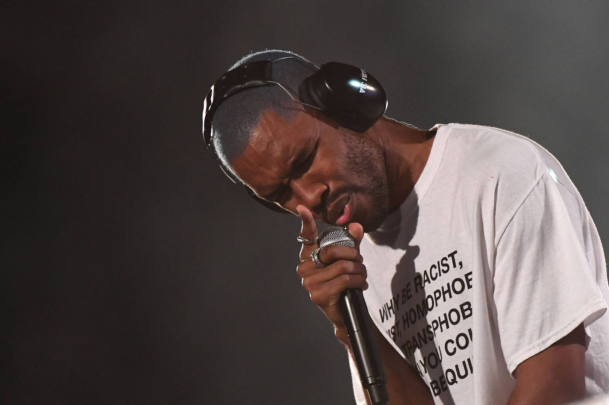
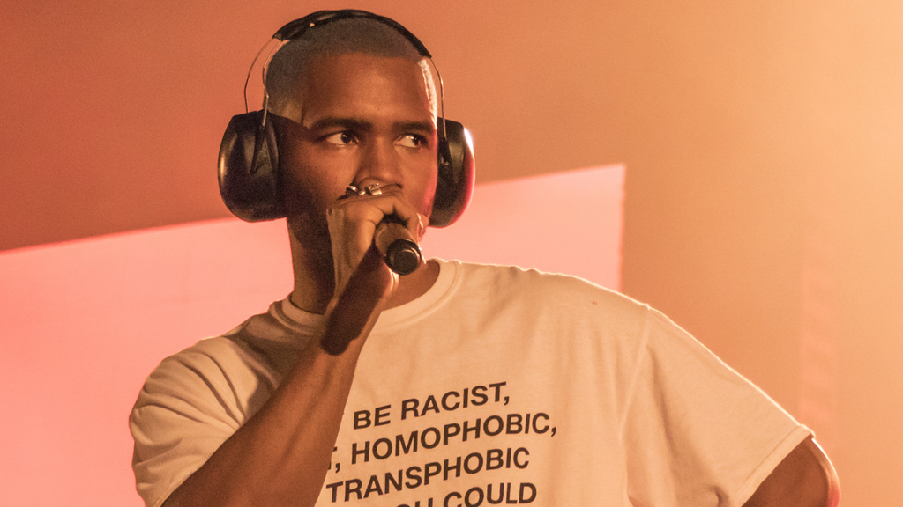

Frank Ocean é um dos artistas mais influentes da música contemporânea. Conhecido por sua voz marcante, letras profundas e estilo inovador, ele conquistou milhões de fãs ao redor do mundo. Sua música mistura R&B, soul, pop alternativo e hip hop, criando um som único que marcou uma geração.
Frank Ocean nasceu como Christopher Edwin Breaux em 28 de outubro de 1987, na cidade de Long Beach, Califórnia, Estados Unidos. Ainda jovem, mudou-se para Nova Orleans, onde desenvolveu seu interesse pela música. Após o furacão Katrina destruir seu estúdio de gravação, ele mudou-se para Los Angeles para perseguir sua carreira artística. Antes da fama, Frank trabalhou como compositor para diversos artistas famosos. Em 2011, lançou a mixtape "Nostalgia, Ultra", que recebeu grande reconhecimento da crítica e do público. Desde então, tornou-se um dos nomes mais respeitados da indústria musical.

Primeiro Projeto de grande destaque de Frank Ocean. A mixtape mistura R&B, soul e hip hop, apresentando letras emocionais sobre amor, juventude e experiências pessoais. Foi o trabalho que revelou seu talento ao grande público.
Primeiro álbun de estúdio de Frank Ocean. O disco aborda temas como amor, solidão, dinheiro e identidade, combinando diferentes estilos musicais com uma produção sofisticada. Foi amplamente elogiado pela crítica e venceu um Grammy.
Álbum visual lançado de forma experimental. Apresenta uma sonoridade mais atmosférica e introspectiva, com foco em transições suaves e experimentação musical. É considerado um projeto importante na evolução artística de Frank Ocean.
Considerado o álbum mais influente da carreira de Frank Ocean. Com letras profundas e produção inovadora, aborda memórias, relacionamentos, amadurecimento e identidade. O álbum recebeu aclamação mundial e é frequentemente citado como um dos melhores da década de 2010.